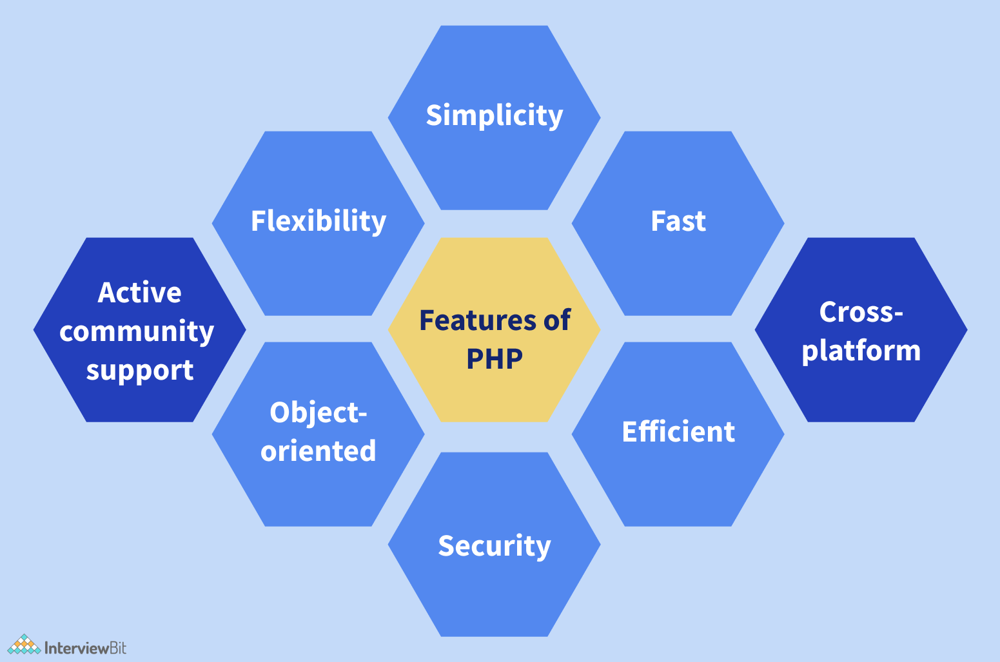

PHP (Hypertext Preprocessor) is a versatile and widely used server-side scripting language for creating dynamic and interactive web applications. This PHP tutorial will give you an in-depth understanding of the PHP scripting language. Whether you are a beginner or a professional PHP developer this free PHP tutorial will provide valuable knowledge about PHP scripting language
PHP is a popular scripting language used for creating dynamic web pages and web applications. The term PHP is an acronym of Hypertext Preprocessor. It is an open-source, interpreted, object-oriented server-side scripting language.
< ?php
PHP code goes here
?>
PHP is developed by Rasmus Lerdorf in 1994 the very first version of PHP that simply designed to set the Common Gateway Interface (CGI) binaries, which are written in C programming language. The latest version of PHP is PHP version 8 which is released on November 24, 2022. It can be easily embedded with HTML files. HTML codes can also be written in a PHP file. The PHP codes are executed on the server side whereas HTML codes are directly executed on the browser.

Its popularly known for its simplicity,So the language is very logical and well organized general-purpose programming language. Even people with a normal programming background can easily understand and capture the use of language. PHP is very advantageous for new users as its a very reliable, fluent, organized, clean, demandable and efficient.
PHP is known for its flexibility and embedded nature as it can be well integrated with HTML, XML, JavaScript and many more. PHP can run on multiple operating systems like Windows, Unix, Mac OS, Linux, etc. The PHP scripts can easily run on any device like laptops, mobiles, tablets, and computer. It is very comfortably integrated with various Databases. Desktop applications are created using advanced PHP features
Users generally prefer fast loading websites. For any web development, speed becomes an important aspect which is taken care of by PHP. PHP scripts are faster than other scripting languages like ASP.NET, PERL, and JSP. The memory manager of PHP 7 is very optimized and fast as compared to older versions of PHP. Even connecting to the database and loading of required data from tables, are faster than other programming languages.
PHP is very rich with many diverse online community developers to help beginners for web-based applications. These worldwide volunteers contribute many features as well as new versions for PHP libraries. Even they contribute a translation in different languages to help out programmers. There is a bundle of third-party open-source libraries which provide basic functionalities.
PHP is multi-platform and known for its portability as it can run on any operating System and windows environments. The most common are XAMPP (Windows, Apache Server, MySQL, Perl, and PHP) and LAMP (Linux, Apache, MySQL, PHP). As PHP is platform-independent, it’s very easy to integrate with various databases and other technologies without re-implementation.
PHP supports object-oriented programming features, resulting in increased speed and introducing added features like data encapsulation and inheritance at many levels.
It provides a built-in module for easy and efficient database management system. The high speed of PHP is advantageous for users for its server administration and mail functionality. Also, it supports session management and removing of unwanted memory allocation.